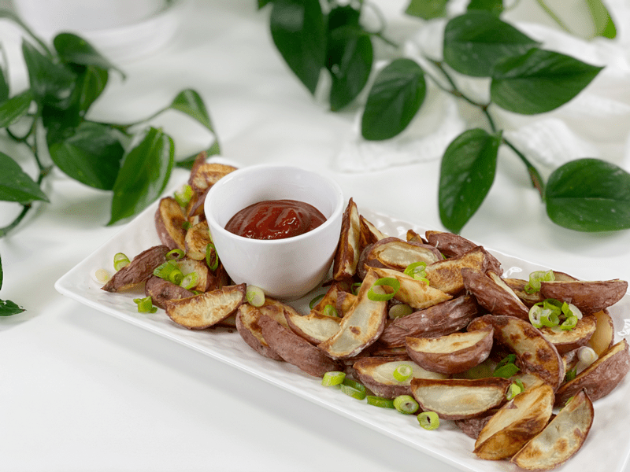
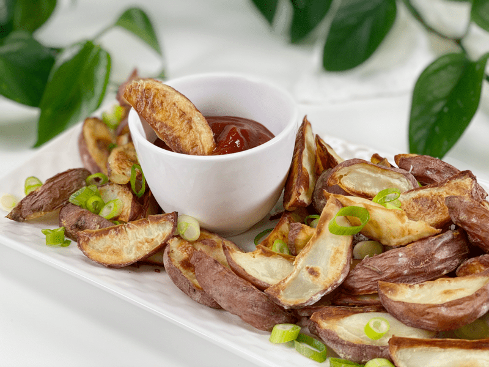
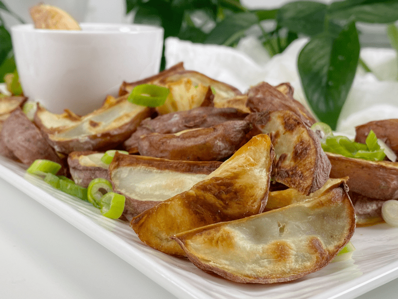

Crispy Baked Potato Wedges | Oil-free
Did you know that big, delicious potato wedges can be moist on the inside and crispy on the outside–without oil? You heard me..without oil! Interestingly enough, my grandfather taught me a cooking trick when I was up in Alaska, caring for my grandmother as she was preparing to be Heaven-bound.

I quickly learned that my grandfather didn’t know how to cook at all, since Grandma had been in charge of that department for their 70 years of marriage. BUT, he did know how to make crispy potatoes (a lingering skill from his cowboy days). My grandfather was a man of FEW words, so when he spoke, I listened, and because of that, I walked away with this trick. Although my end version is much healthier, his technique involved a 2-step cooking process; I added the rest. But first, if you are nervous about the carbs in potatoes, learn why they can be part of a healthy diet.
Potatoes Are Not the Enemy…
It’s the way we cook and dress them that gives them their unhealthy reputation. Here are just some of the amazing facts about potatoes.
- Potatoes are loaded with potassium. One large russet potato (with skin) contains 1600 milligrams of potassium, almost 45% of the daily recommended amount, and 4 times the potassium count of a banana.
- They are packed with fiber. If you eat the skin, a large potato contains 8 grams of dietary fiber, or a third (32%) of what you need in a day.
- I loved learning that they are rich in Vitamin C. The skin of the potato alone contains 29 milligrams of Vitamin C, nearly 50% of your daily recommended amount.
- Bring on the B vitamins! A single large potato contains 55% of your daily requirement of B6, a vitamin that is crucial for your cardiovascular, digestive, immune, muscular, and nervous systems.
- Potatoes are a resistant starch, which you can read more about (here).
- Eat only ORGANIC potatoes–read why within (this) post. It’s important to know what we are putting in our mouths.

I think we are ready to move on with the cooking process. I hope you pick up a trick or two–the day we stop learning is the day we stop living.
Precook the Potatoes
I found this step creates the best oil-free crispy potatoes. You can either lightly steam or bake them early in the day or even the day before. The key is to make sure that they’re completely cool before slicing them into wedges, coins, or stick shapes. Below, I will share my links on how to steam, bake, or boil the potatoes. Regardless of your method, be careful that you don’t overcook the potatoes, as they will get mushy. I cook them until a knife or fork can glide into them, but they stick to the blade when I lift it out.
- Learn how to steam potatoes (here).
- Learn how to bake potatoes (here).
- Learn how to boil potatoes (here)–not my first recommendation.
Cut the Potatoes
After the potatoes are par-cooked, allow them to cool completely…only then are we ready to prepare them for the cooking process. Here are some of the things I season with to achieve a golden outside with a soft interior.
- Cut the cooled potatoes into the desired shape (unless you par-cooked them in already cut shapes).
- As you are cutting them, place them a bowl of cold water so they don’t start turning brown/black.
- Cut them in even sizes, so they all bake at the same rate. Tip: Place a wet cloth under your cutting board to prevent it from moving around–knife safety skill! Learn more knife skills and recommendations (here).
- Don’t cut them too small, or they may burn.
- Cut away any black spots.
- Drain and pat dry when ready to season.
- Place the cut potatoes back in the cooking pot (to reduce dirty dishes) so you can toss them with seasoning.
- If you find that you can’t get to the baking process yet, cover your potatoes with cold water and place in the fridge for no longer than 24 hours. This technique will prevent the potatoes from browning and sticking together.

When I documented my cooking process and took photos of these potatoes, I seasoned the potato wedges only with salt. I didn’t want the coloring of spices to give you the impression that the spices instead of the technique created the golden coloring.
Seasoning the Potatoes
I toss my cut potatoes in just enough vegetable broth or apple cider vinegar to coat them. The vinegar won’t affect the taste. Both of these liquids help with the browning. Since I use this trick with a lot of my baked veggies, I keep both the broth and the vinegar in glass spray bottles (keeping them stored in the fridge).
- Preheat the oven to 400 degrees (F) while you season the potatoes because if they sit around in the baking pan waiting for the oven to warm, they can start to discolor.
- Coat the cut potatoes in vegetable broth or apple cider vinegar.
- Sprinkle your choice of spices or dried herbs over the potatoes, then gently toss, making sure everything is well coated.
- Don’t use fresh herbs at this point, since they will burn. It’s better to mince any fresh herbs and toss them with cooked potatoes. Fresh herbs will add color and bursts of flavor.
- Line a baking pan with parchment paper or a silicone mat.
- Place the seasoned potatoes on the pan in a single layer, making sure not to overcrowd.
- Giving a little space between the potatoes will help them cook evenly and get that golden color on all sides.
Baking the Potatoes
Depending on how you like your potatoes, this will either be a single- or double-step process.
- Place the pan(s) in the oven and roast until the potatoes are fork-tender in the center, golden on the outside and have puffed up.
- The time will depend on your oven and the size and type of your potato, usually between 35 to 45 minutes, but go by the color and how much they have puffed and are tender, rather than by the time.
- You can flip them over halfway through the cooking time, but I didn’t find it necessary.
- Optional Broiling: If you want a bit crisper without overcooking the potatoes (which makes them dry inside) broil on low for 5-10 minutes or until brown. (I didn’t do this process to the potatoes in the photo.)
- Enjoy while hot. Sprinkle with fresh herbs (green onion and chives pair beautifully). Dip in my homemade ketchup.
© AmieSue.com